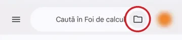

<!doctype html>
<html lang="ro">
<head>
<meta charset="utf-8">
<meta name="viewport" content="width=device-width, initial-scale=1, viewport-fit=cover">
<title>Cum fac tema pe telefon</title>
<meta name="description" content="Ghiduri pas cu pas, cu poze de pe un telefon adevărat: cum faci un document, o prezentare sau un tabel cu calcule, fără calculator acasă.">
<link rel="stylesheet" href="../_motor/motor.css">
<style>
/* tema întunecată, ca la jocuri (motor.css ține doar tema luminoasă pe :root) */
@media (prefers-color-scheme:dark){:root:not([data-theme="light"]){
  --desk:#10151B; --paper:#19212B; --paper2:#212B37; --line:#2F3A48;
  --ink:#E6EAF0; --ink2:#9BA6B5; --accent:#7FA0FF; --accentInk:#10151B; --sel:#25324F;
  --mark:#F3D34A; --markInk:#18202A;
  --ok:#57C98D; --okbg:#14301F; --bad:#FF7B72; --badbg:#3A1C1E;
  --shadow:0 1px 2px rgba(0,0,0,.35),0 10px 28px rgba(0,0,0,.4);
}}
main{max-width:820px;margin:0 auto;padding-top:28px}
.crumbs{display:flex;flex-wrap:wrap;gap:2px 8px;align-items:center;margin:0 0 14px;font-size:.88rem;color:var(--ink2)}
.crumbs a{color:var(--ink2);text-underline-offset:3px}
.crumbs .sep{color:var(--line)}
h1{font-family:var(--fd);font-weight:850;font-size:clamp(2rem,7vw,3rem);line-height:1.05;margin:0;letter-spacing:-.02em}
.lede{color:var(--ink2);max-width:60ch;margin:12px 0 0}
.carduri{display:grid;grid-template-columns:repeat(auto-fill,minmax(min(260px,100%),1fr));gap:12px;margin-top:26px}
.card{display:flex;flex-direction:column;gap:6px;text-align:left;background:var(--paper);border:1px solid var(--line);border-left:5px solid var(--accent);border-radius:8px;padding:14px 16px}
.card:hover,.card:focus-visible{border-color:var(--accent)}
.card .app{font-family:var(--fm);font-size:.72rem;letter-spacing:.05em;text-transform:uppercase;color:var(--ink2)}
.card .tit{font-family:var(--fd);font-weight:800;font-size:1.08rem;line-height:1.2}
.card .cati{font-size:.86rem;color:var(--ink2)}
footer{margin-top:40px;padding-top:14px;border-top:1px solid var(--line);font-size:.85rem;color:var(--ink2)}
/* instalarea aplicațiilor (06.10.2026) */
.intai{margin-top:22px;background:var(--paper);border:1px solid var(--line);border-left:5px solid var(--mark);border-radius:8px;padding:14px 16px}
.intai p{margin:0 0 10px}
.apps{display:grid;gap:10px;margin:18px 0 6px}
.apps .ap{background:var(--paper);border:1px solid var(--line);border-radius:8px;padding:12px 14px}
.apps .ap .x{font-family:var(--fm);font-size:.78rem;color:var(--ink2)}
.apps .ap .n{font-family:var(--fd);font-weight:800;font-size:1.05rem;margin:2px 0 8px}
.apps .ap .row{gap:8px;flex-wrap:wrap}
.instal h2{font-family:var(--fd);font-size:1.25rem;margin:28px 0 8px}
.instal ol{padding-left:1.3em}.instal li{margin:6px 0}
.instal .fig{display:flex;gap:18px;align-items:flex-start;flex-wrap:wrap;margin-top:8px}
.instal .fig img{width:360px;max-width:100%;height:auto;border:1px solid var(--line);border-radius:10px}
.instal .fig ol{flex:1 1 260px;margin:0}
</style>
</head>
<body>
<main id="app"></main>

<script>
/* Ghidurile se inregistreaza singure, la fel ca in jocuri: fiecare `pasi.js`
   cheama JocMotor.ghid("<id>", {...}). Pagina asta nu are motor de joc, deci ii
   dam doar cutia in care sa le puna. */
window.JocMotor = { GHIDURI: {}, ghid: function (id, def) { this.GHIDURI[id] = Object.assign({ id: id }, def); } };
</script>
<script src="../_ghiduri/cont-drive/pasi.js"></script>
<script src="../_ghiduri/docs/pasi.js"></script>
<script src="../_ghiduri/slides/pasi.js"></script>
<script src="../_ghiduri/sheets/pasi.js"></script>

<script>
(function () {
  'use strict';
  var G = window.JocMotor.GHIDURI, app = document.getElementById('app');
  var ORDINE = ['cont-drive', 'docs', 'slides', 'sheets'];
  var esc = function (s) { return String(s == null ? '' : s).replace(/[&<>"]/g, function (c) { return { '&': '&amp;', '<': '&lt;', '>': '&gt;', '"': '&quot;' }[c]; }); };

  var CRUMBS = '<nav class="crumbs" aria-label="Unde ești">' +
    '<a href="../../hub/index.html">🏠 LearningHub</a><span class="sep" aria-hidden="true">›</span>' +
    '<a href="../index.html">Jocuri TIC</a><span class="sep" aria-hidden="true">›</span>' +
    '<span aria-current="page">Cum fac tema pe telefon</span></nav>';

  function acasa() {
    var carduri = ORDINE.filter(function (id) { return G[id]; }).map(function (id) {
      var g = G[id];
      return '<button class="card" type="button" data-ghid="' + esc(id) + '">' +
        '<span class="app">' + esc(g.app) + '</span>' +
        '<span class="tit">' + esc(g.titlu) + '</span>' +
        '<span class="cati">' + g.pasi.length + ' pași, cu poză la fiecare</span></button>';
    }).join('');
    app.innerHTML = CRUMBS +
      '<h1>Cum fac tema pe telefon</h1>' +
      '<p class="lede">N-ai calculator acasă? Se poate și de pe telefon — iese un fișier adevărat, ' +
      'pe care profesorul îl deschide și îl corectează. Mai jos ai drumul pas cu pas prin aplicația ' +
      'adevărată, cu poze de pe un telefon Android, în română.</p>' +
      '<div class="intai"><p><b>Întâi: aplicația potrivită pe telefon.</b> Fără ea, fișierul din lecție (.xlsx, .docx, .pptx) ' +
      'se vede, dar nu se poate modifica.</p><button class="btn primary" type="button" id="spre-instalare">Instalează aplicațiile →</button></div>' +
      '<div class="carduri">' + carduri + '</div>' +
      '<footer>Aceleași ghiduri apar și la diploma jocurilor, sub provocare. ' +
      'Pozele sunt făcute pe un telefon curat; în ele nu apare numele sau adresa nimănui.</footer>';
    lega();
    document.getElementById('spre-instalare').onclick = instalare;
    if (location.hash) location.hash = '';
  }

  /* INSTALAREA (06.10.2026, profesorul: „poate trebuie sa ii invatam cum sa instaleze google sheets ... dar si google docs si
     slides pe telefoane”). O elevă vedea pe telefon registrul din lecția VIII/2, dar nu putea scrie în el: era deschis într-o
     previzualizare. Text + linkurile oficiale (verificate 06.10.2026: răspund 200, cu titlul aplicației) + o captură reală
     (sheets/01-lista.webp, cu dosarul din bara „Caută în …” încercuit; același dosar e și în Documente și Prezentări).
     Capturi din Magazin Play: NEFĂCUTE (emulatorul cere PIN la pornire) - de aceea pașii de instalare sunt doar text. */
  var APPS = [
    { x: '.xlsx', ce: 'tabel, ca în Excel', n: 'Foi de calcul Google', en: 'Google Sheets', play: 'sheets', ios: '842849113', ghid: 'sheets' },
    { x: '.docx', ce: 'document, ca în Word', n: 'Documente Google', en: 'Google Docs', play: 'docs', ios: '842842640', ghid: 'docs' },
    { x: '.pptx', ce: 'prezentare, ca în PowerPoint', n: 'Prezentări Google', en: 'Google Slides', play: 'slides', ios: '879478102', ghid: 'slides' }];
  function instalare() {
    var lista = APPS.map(function (a) {
      return '<div class="ap"><div class="x">fișier ' + a.x + ' · ' + a.ce + '</div>' +
        '<div class="n">' + a.n + ' <i style="font-weight:500">(' + a.en + ')</i></div><div class="row">' +
        '<a class="btn primary sm" href="https://play.google.com/store/apps/details?id=com.google.android.apps.docs.editors.' + a.play + '" target="_blank" rel="noopener">Magazin Play (Android)</a>' +
        '<a class="btn sm" href="https://apps.apple.com/app/id' + a.ios + '" target="_blank" rel="noopener">App Store (iPhone)</a>' +
        '<a class="btn ghost sm" href="#' + a.ghid + '">Cum lucrezi în ea</a></div></div>';
    }).join('');
    app.innerHTML = CRUMBS + '<div class="instal">' +
      '<div class="eyebrow">Înainte de orice ghid</div>' +
      '<h1 style="font-size:clamp(1.6rem,5.5vw,2.3rem);margin-top:6px">Instalează aplicațiile pe telefon</h1>' +
      '<div class="lede">Fișierele din lecții — tabelul Excel (.xlsx), documentul Word (.docx), prezentarea PowerPoint (.pptx) — se pot <b>modifica</b> pe telefon ' +
      'doar cu aplicația potrivită. Fără ea, telefonul îți arată fișierul doar într-o <b>previzualizare</b>: îl vezi, dar nu te lasă să scrii în el. Aplicațiile de mai jos sunt ' +
      'gratuite, făcute de Google, și folosesc contul Google al telefonului (cel cu care intri în Magazin Play).</div>' +
      '<div class="apps">' + lista + '</div>' +
      '<h2>Pe Android: instalarea</h2><ol>' +
      '<li>Atinge butonul <b>Magazin Play</b> al aplicației, mai sus. Se deschide aplicația Magazin Play <i>(Google Play)</i>, direct pe pagina ei.</li>' +
      '<li>Verifică: sub numele aplicației scrie <b>Google LLC</b>. Dacă scrie altceva, e o imitație: nu o instala.</li>' +
      '<li>Atinge <b>Instalează</b> <i>(Install)</i> și așteaptă să se termine. Dacă vezi <b>Deschide</b> <i>(Open)</i> sau ' +
      '<b>Actualizează</b> <i>(Update)</i>, aplicația e deja pe telefon.</li>' +
      '<li>Dacă telefonul n-are cont Google, întâi vezi ghidul <a href="#cont-drive">Cum pui contul de Google pe telefon</a>.</li>' +
      '<li>Telefonul n-are Magazin Play (de exemplu unele telefoane Huawei)? Spune-i profesorului: lucrezi la școală, pe calculator.</li></ol>' +
      '<h2>Pe iPhone</h2><p>Atinge butonul <b>App Store</b> al aplicației, apoi <b>Obține</b> <i>(Get)</i>. Pe iPhone, aplicațiile arată ' +
      'asemănător, dar nu identic: pozele din ghiduri sunt făcute pe un telefon cu Android.</p>' +
      '<h2>Deschide fișierul din lecție cu aplicația</h2><div class="fig">' +
      '' +
      '<ol><li>În lecție, la pasul cu fișierul de descărcat (la Excel: „Acum în Excel-ul adevărat”), atinge numele fișierului: telefonul ' +
      'îl descarcă în dosarul <b>Descărcări</b> <i>(Downloads)</i>, unde ajung fișierele luate de pe internet.</li>' +
      '<li>Deschide aplicația (pentru .xlsx: <b>Foi de calcul Google</b>). Sus, în bara <b>Caută în …</b> <i>(Search)</i>, atinge ' +
      '<b>dosarul</b> din dreapta (încercuit în poză). Documente și Prezentări au același dosar, în același loc.</li>' +
      '<li>Alege fișierul din <b>Descărcări</b>.</li>' +
      '<li>Fișierul se deschide în aplicație și îl poți modifica. În Foi de calcul atingi <b>de două ori</b> o celulă ca să scrii în ea; ' +
      'în Prezentări atingi <b>de două ori</b> o casetă.</li></ol></div>' +
      '<h2>Vezi fișierul, dar nu poți scrie în el?</h2><p>Atunci l-ai deschis doar pentru citit, într-o previzualizare (de obicei, când ' +
      'atingi fișierul în lista de descărcări și telefonul îl arată cu altă aplicație decât cea Google). Închide-l și deschide-l din aplicația Google, ca mai sus. ' +
      'Dacă telefonul te întreabă cu ce să deschidă fișierul, alege aplicația Google potrivită.</p>' +
      '<div class="row" style="margin-top:22px"><button class="btn ghost" id="g-toate" type="button">Toate ghidurile</button>' +
      '<a class="btn ghost" href="../index.html">Jocurile TIC</a></div></div>';
    document.getElementById('g-toate').onclick = acasa;
    if (location.hash.slice(1) !== 'instalare') location.hash = 'instalare';
    window.scrollTo(0, 0);
  }

  function deschide(id, i) {
    var g = G[id]; if (!g) return acasa();
    var n = g.pasi.length; i = Math.max(0, Math.min(i || 0, n - 1));
    var P = g.pasi[i];
    app.innerHTML = CRUMBS +
      '<div class="eyebrow">Ghid pas cu pas · ' + esc(g.app) + '</div>' +
      '<h1 style="font-size:clamp(1.6rem,5.5vw,2.3rem);margin-top:6px">' + esc(g.titlu) + '</h1>' +
      (i === 0 && g.intro ? '<div class="lede" style="margin-top:12px">' + g.intro + '</div>' : '') +
      '<div class="ghid">' +
        '<div class="telefon"><div class="telefon-ecran">' +
          '' +
        '</div></div>' +
        '<div class="ghid-text">' +
          '<div class="ghid-nr">Pasul ' + (i + 1) + ' din ' + n + '</div>' +
          '<h3>' + P.t + '</h3>' +
          (P.d ? '<div class="reading" style="margin-top:8px">' + P.d + '</div>' : '') +
          (P.atentie ? '<div class="fb bad" style="margin-top:10px"><strong>Atenție:</strong> ' + P.atentie + '</div>' : '') +
          '<div class="row" style="margin-top:16px">' +
            '<button class="btn" id="g-prev" type="button"' + (i === 0 ? ' disabled' : '') + '>← Înapoi</button>' +
            (i < n - 1 ? '<button class="btn primary" id="g-next" type="button">Următorul pas →</button>'
                       : '<button class="btn primary" id="g-gata" type="button">Gata, am terminat</button>') +
          '</div>' +
        '</div>' +
      '</div>' +
      '<div class="ghid-pasi" aria-label="Toți pașii">' + g.pasi.map(function (p, k) {
        return '<button type="button" class="gp' + (k === i ? ' on' : '') + '" data-p="' + k + '">' +
          '<span class="n">' + (k + 1) + '</span><span class="t">' + esc(p.t.replace(/<[^>]+>/g, '')) + '</span></button>';
      }).join('') + '</div>' +
      '<div class="row" style="margin-top:18px"><button class="btn ghost" id="g-toate" type="button">Toate ghidurile</button>' +
      '<a class="btn ghost" href="../index.html">Jocurile TIC</a></div>';

    var prev = document.getElementById('g-prev'); if (prev) prev.onclick = function () { deschide(id, i - 1); };
    var next = document.getElementById('g-next'); if (next) next.onclick = function () { deschide(id, i + 1); };
    var gata = document.getElementById('g-gata'); if (gata) gata.onclick = acasa;
    document.getElementById('g-toate').onclick = acasa;
    app.querySelectorAll('.gp').forEach(function (b) { b.onclick = function () { deschide(id, +b.dataset.p); }; });
    if (location.hash.slice(1) !== id) location.hash = id;
    window.scrollTo(0, 0);
  }

  function lega() {
    app.querySelectorAll('[data-ghid]').forEach(function (b) {
      b.onclick = function () { deschide(b.dataset.ghid, 0); };
    });
  }

  window.addEventListener('hashchange', function () {
    var id = location.hash.slice(1);
    if (id === 'instalare') instalare(); else if (id && G[id]) deschide(id, 0); else if (!id) acasa();
  });

  var start = location.hash.slice(1);
  if (start === 'instalare') instalare(); else if (start && G[start]) deschide(start, 0); else acasa();
})();
</script>
</body>
</html>
